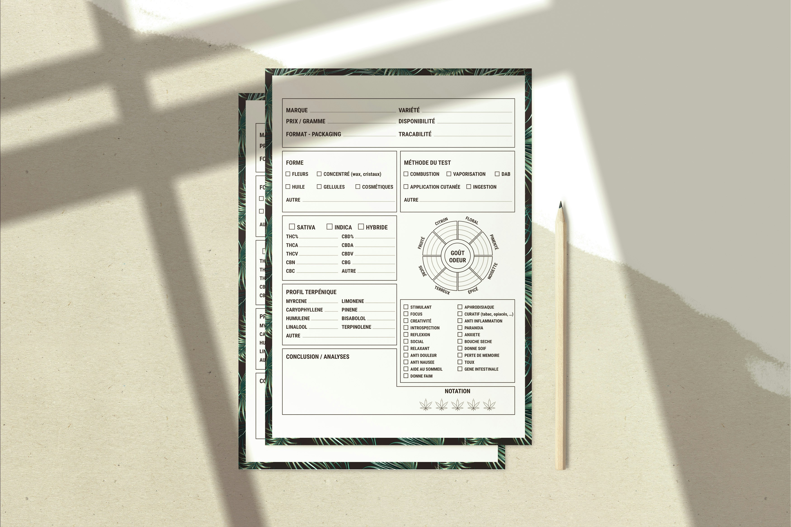

SQL
The goal of this project is to conduct data cleaning and perform EDA on the motorcycle parts sales dataset,
alongside the SQL queries required to execute these tasks.
The specific activities include:
Identifying and removing duplicate records; handling missing values appropriately;
ensuring data types are correctly assigned; and performing EDA to uncover insights and patterns in the data.


In this project, I created a dashboard to visualize the sales data of a bike company.
The dashboard includes key metrics such as total bike sales, average income per purchase, and count of purchased Bike.
To create the dashboard, I used Excel's data visualization tools, including pivot tables, charts, and slicers.

Based on the Netflix Top 10 and Netflix Top10 country datasets,
which offer weekly rankings and viewership data for films and TV shows across various categories and countries,
this project aims to explore global trends in content consumption. I used Tableau to create a dashboard that visualizes these trends.

The board of directors wants to gain a better understanding of wholesale revenue by product line,
and how this varies month-to-month and across warehouses. You have been tasked with calculating
net revenue for each product line and grouping results by month and warehouse.
From the analysis, the Central warehouse consistently demonstrates the highest net revenue across nearly all product lines and months,
indicating it is the most productive and efficient hub for the company's sales.
Notable revenue peaks for the Central warehouse include "Engine" in August (9,528.71), "Frame & Body" in August (8,657.99), and
"Suspension & Traction" in July ($6,456.72).

Madivoli Inc. is a mid-sized U.S. retailer specialising in office solutions, furniture, and technology products.
Management requests an analysis to evaluate profitability, assess sales performance, optimize operations,
and gain customer insights, specifically to identify top-spending corporate clients.
To address these needs, I conducted a comprehensive analysis of the company's sales and profit data,
leveraging Excel's advanced features such as PivotTables, Data Analysis ToolPak for correlation analysis, conditional formatting, visualization
(stacked bar chart, waterfall chart, filled map chart, pie chart, bullet chart, bubble chart, and combo chart),
grouped PivotTables, slicers, and timelines.
This dataset comprises Netflix's weekly top 10 lists for the most-watched TV shows and films worldwide.
The data spans from June 28, 2021, to August 27, 2023.
The project aims to combine the different categories of top 10 lists in a single weekly top 10 list spanning all categories,
analyze the top 10 lists to identify trends in viewership and content popularity,
explore the top 10 lists by country to understand regional preferences,and
visualize the popularity ranking of shows and films over time.
To achieve these goals, I used SQL to clean and transform the data,
creating a unified weekly top 10 list that includes all categories.
I then performed exploratory data analysis (EDA) to uncover trends in viewership and content popularity,
and analyzed the top 10 lists by country to understand regional preferences.

Does going to university in a different country affect your mental health?
A study, by a Japanese international university, found that international students have a higher risk of mental health difficulties than the general population,
and that social connectedness (belonging to a social group) and
acculturative stress (stress associated with joining a new culture) are predictive of depression..
In this project, I used descriptive (minimum, maximum, sum, mean, and standard deviation) and inferential statistics (correlation, ANOVA,
one-sample t-test, and regression) to analyze the data and answer questions about the relationship between social connectedness, acculturative stress, and depression in students.
I also explored how these factors differ between students from different countries.

Despite the growing emphasis on human capital, research has mainly centred on firm performance,
often neglecting the direct examination of human capital capabilities and the intermediate outcomes that are crucial for transforming a company's best practices into profitability.
This research aimed to bridge this gap by investigating the relationship between firm flexibility and human capital.
The study revealed a strong positive correlation between a firm's human capital and its competitive advantage,
as well as between the predictors, including the interaction term, and competitive advantage.

In this hypothetical project, I undertook an in-depth performance review and analysis of Madivoli Inc.'s regional sales and profit trends.
Through thorough data examination and analysis, I identified key patterns and areas that required enhancement.
Based on the findings, I developed strategic recommendations aimed at improving overall sales performance and profitability for the company.
These recommendations were presented in a comprehensive report, which included detailed insights and actionable steps for the company's management team to consider.
This research aimed to address several gaps in knowledge. First, it is important to emphasize that most existing studies have primarily focused on
males and females in wealthy countries like India, Singapore, Canada, and South Africa, which presents a perspective from developed regions.
Secondly, the nature and conditions of food environments in industrialized versus developing countries,as well as eating patterns and behaviours concerning fast food, often differ significantly.
Thirdly, previous research produced inconsistent findings. These discrepancies justified the need for an additional study.
With this context in mind, the research aimed to bridge the knowledge gap by examining the relationship between gender, restaurant use, and attitudes towards fast
food among adolescents and young adults in Nairobi City County.
The relationships between gender, age, education, and the use of fast-food restaurants were generally weak.
Submitted for peer review with Social Sciences & Humanities Open.
There is a growing recognition of the potential impact of green practices within hospitality establishments.
However, despite the significant environmental implications of these businesses, this area has been largely overlooked in Kenya.
As a result, there is a pressing need to study green practices in the hospitality industry,
particularly given their substantial contribution to overall emissions across various contexts.
The study employed a comparative descriptive research design.
The population under investigation included a wider range of hospitality establishments to capture a broader spectrum of green practices.
The findings indicate that ESP (F = 0.707, Sig. = 0.645), WSS (F = 0.632, Sig. = 0.704), WMT (F = 0.461, Sig. = 0.704),
ACM (F = 0.688, Sig. = 0.660), SRS (F = 0.140, Sig. = 0.990), and GP (F = 0.461, Sig. = 0.836) all yielded p-values significantly greater than 0.05. Therefore, we fail to reject the null hypothesis.
Submitted for peer review in the International Hospitality Review Journal.
The survey tool was created to gather data for the research study titled “The Moderating Role of Firm Flexibility in the Human Capital-Competitive Advantage Relationship: Evidence from Kenyan Manufacturing Firms.”

The survey tool was created to gather data for the research study titled “A Comparative Analysis of Green Practice Implementation Across Hospitality Establishments in Kenya.”